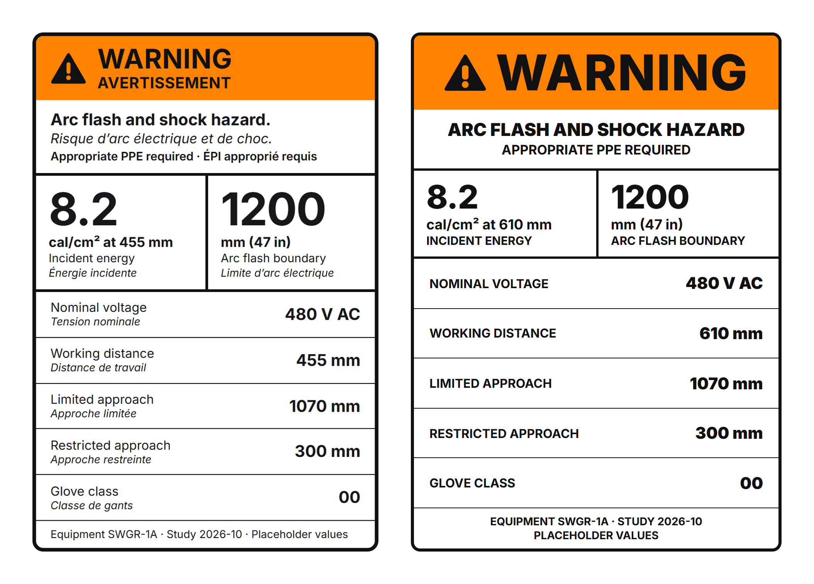
Inspection Ready
Safety Communication For Switchgear Entering North America
A client project that was also my graphic design thesis at Cambrian College: one safety system for electrical equipment, carried from the labels on the cabinet to the website.
Client: a Chinese switchgear manufacturer exporting to North America.
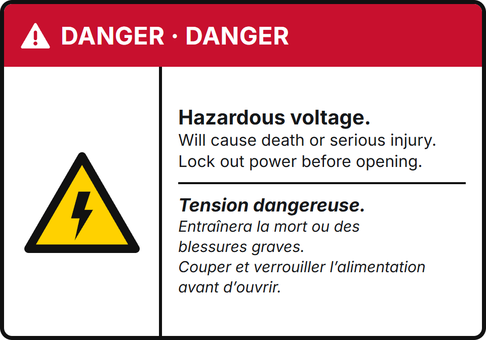
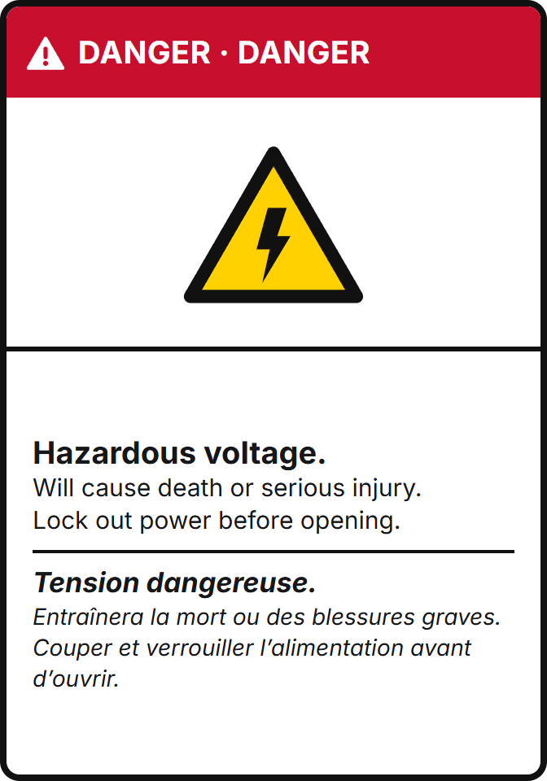
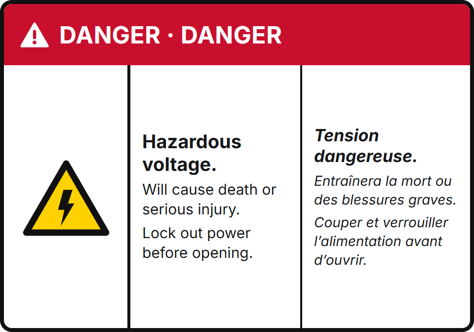
Three Directions
Three directions for the warning label system.
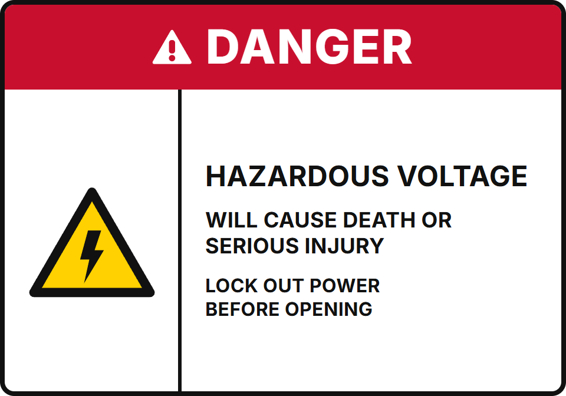
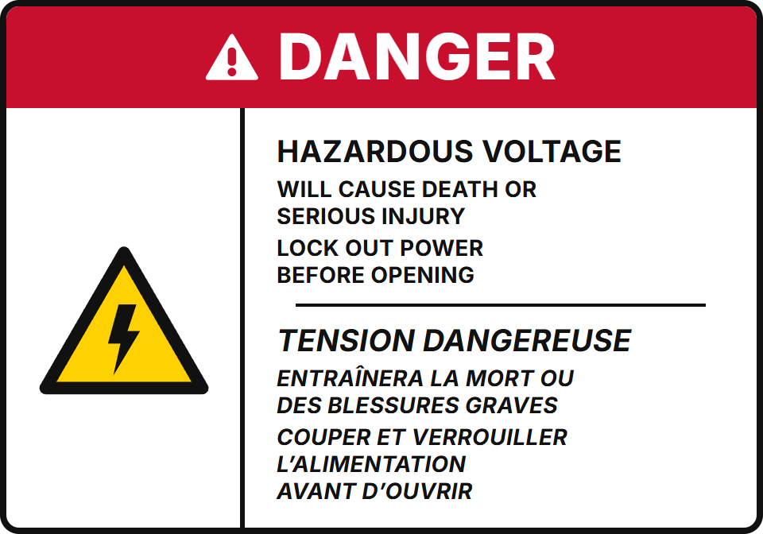
Revised Labels
Revised US and Canadian versions.
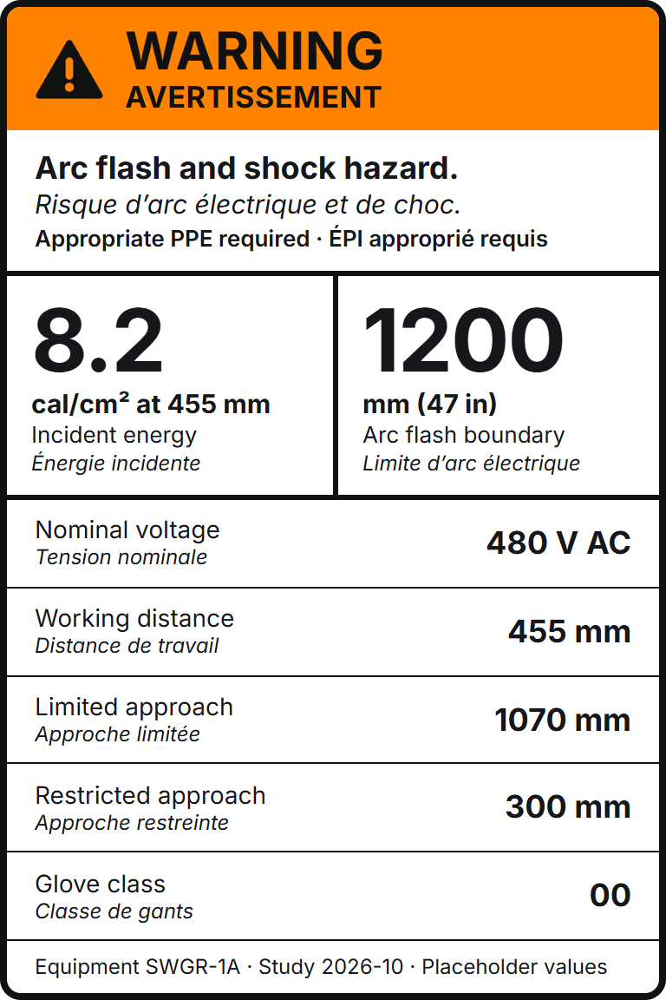
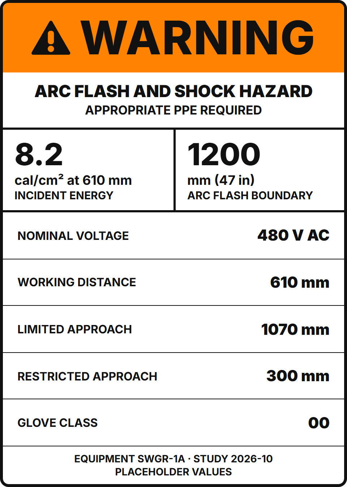
Arc Flash Labels
The arc flash label before and after revision.
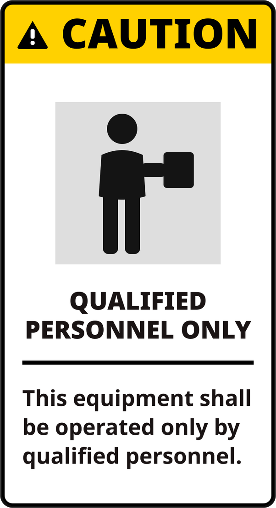
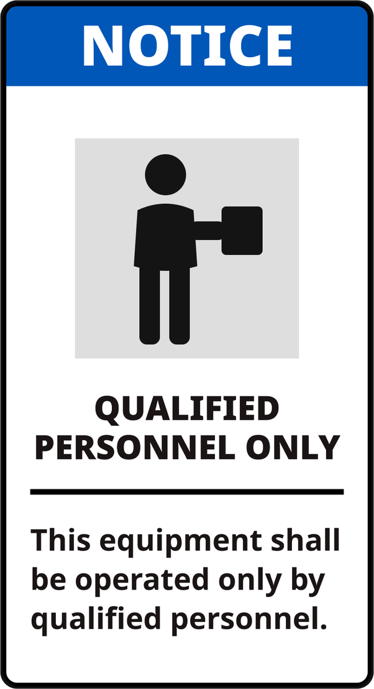
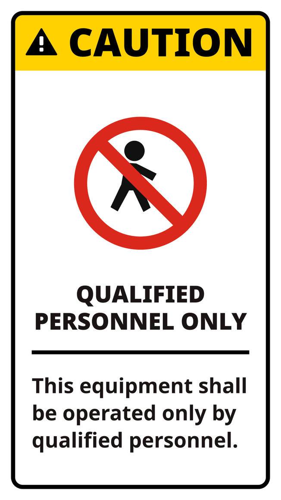
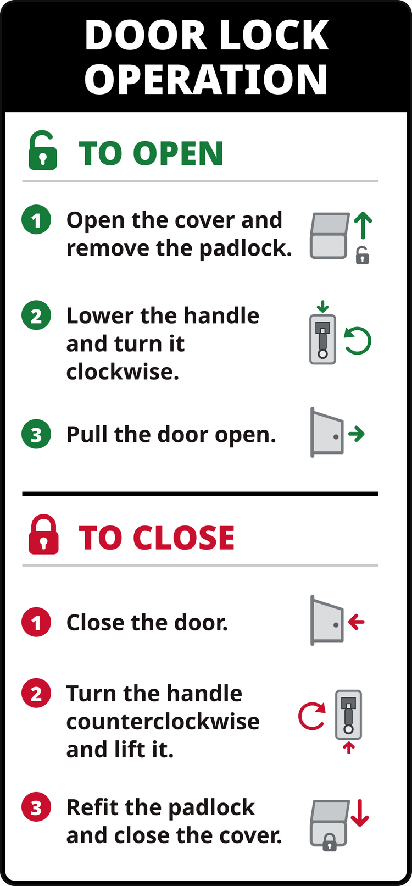
Personnel And Door Labels
The qualified personnel label in three versions, under CAUTION or NOTICE, and a door lock label with three steps to open the door and three to close it.
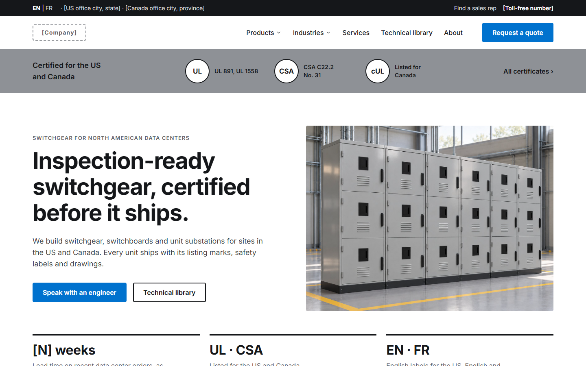
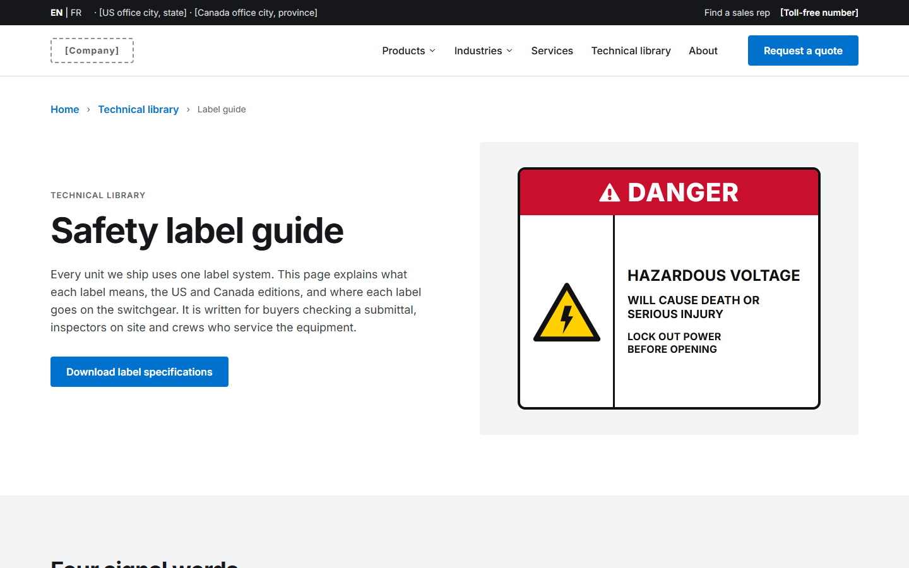
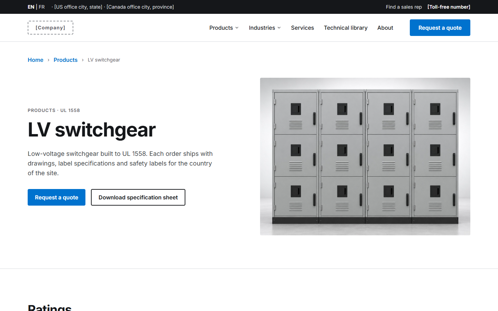
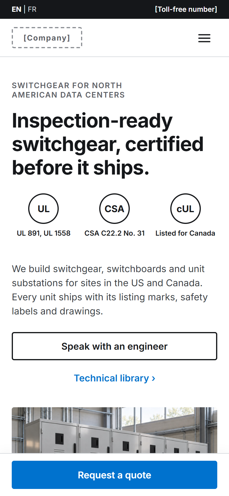
Website
The finished website: home, label library and product pages, on desktop and phone.
This is the public version of the project. The client's name, logo and contact details have been removed, and all values, addresses, phone numbers and lead times on the labels and website are placeholders.